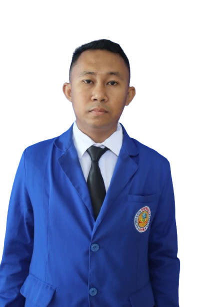

Berkomitmen untuk membentuk generasi yang memiliki karakter kuat, nasionalisme, dan pemikiran kritis melalui pembelajaran Pendidikan Pancasila dan Kewarganegaraan (PPKn) yang inovatif, bermakna, dan berdiferensiasi.
Lihat Artefak PembelajaranRancangan pembelajaran yang mengakomodasi gaya belajar peserta didik yang beragam. Modul ini berfokus pada materi Konstitusi dan Norma, disusun dengan mengintegrasikan studi kasus sosial yang relevan dengan kehidupan siswa sehari-hari.
Implementasi pembelajaran berbasis proyek dengan tema "Suara Demokrasi". Siswa diajak untuk melakukan simulasi pemilihan umum (Pemilu) ketua OSIS sebagai bentuk praktik nyata dari sistem demokrasi yang ada di Indonesia.
Penerapan metode Role Playing (Bermain Peran) di mana peserta didik merekonstruksi suasana sidang perumusan dasar negara. Praktik ini bertujuan untuk membangun rasa empati sejarah dan pemahaman mendalam tentang nilai-nilai musyawarah mufakat.